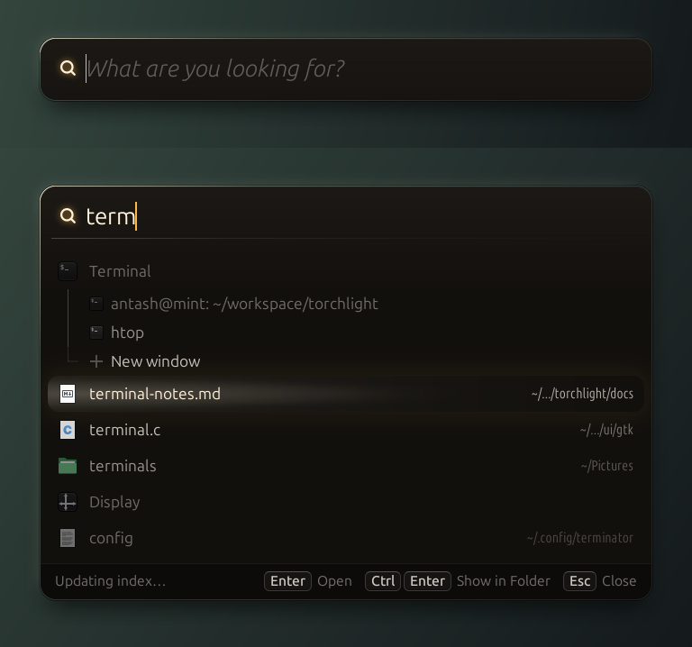

Beam The light follows your selection
Results sit in the dark. The row you are on is lit warm, its neighbours half-lit, the rest fade away, so moving up and down sweeps a torch over your files.
The search icon glows like a lens. Warm charcoal surface, warm white light, a rim lit only near the top.
Motion: the light glides with the selection; when the popup opens, the rows brighten one after another.
Placeholder:
What are you looking for?